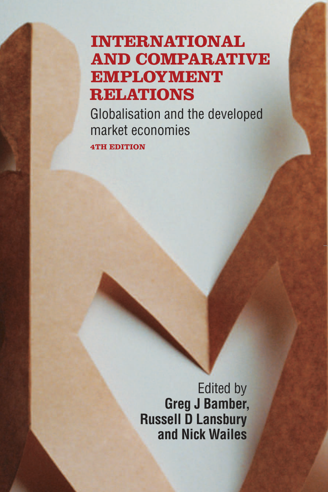
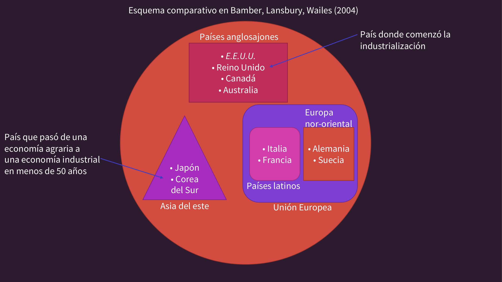
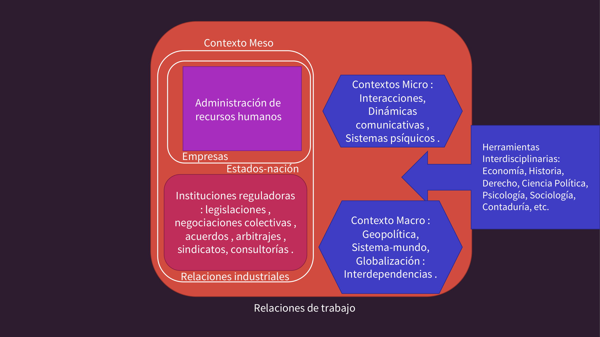
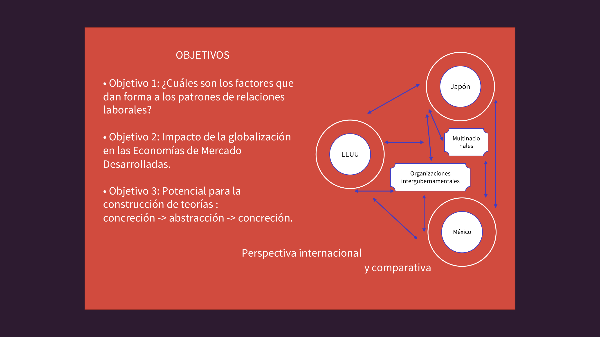
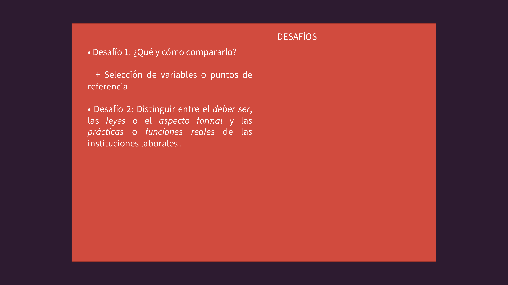
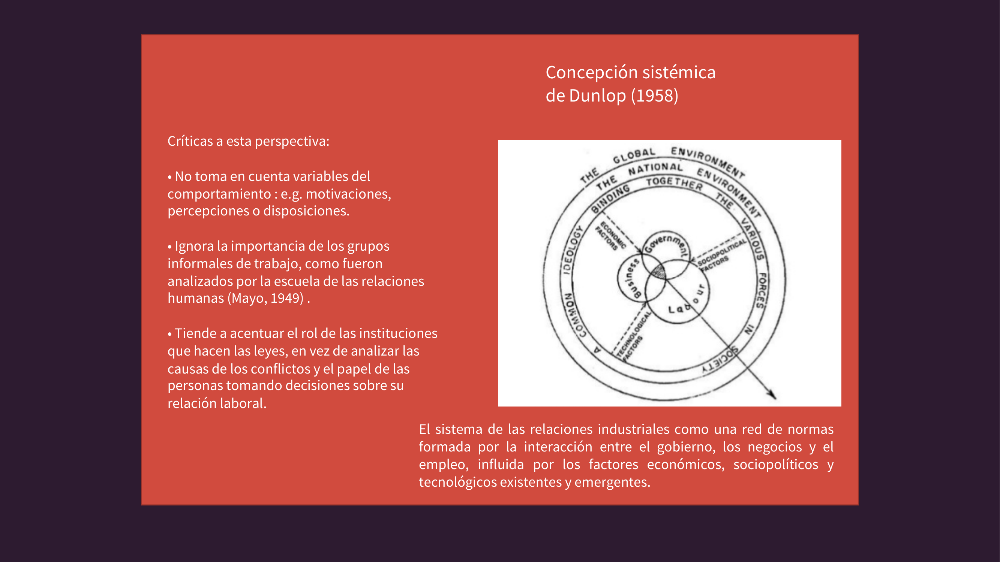
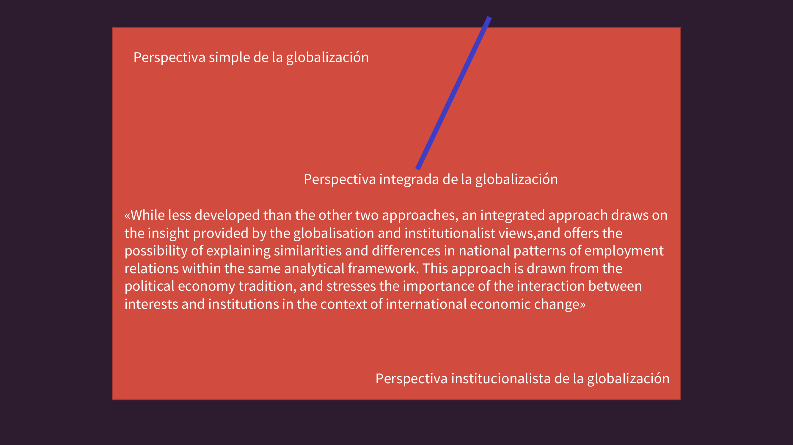

Países anglosajones
EE.UU.
Reino Unido
Canadá
Australia
País donde comenzó la industrialización (Reino Unido)

Globalisation and the Developed Market Economies · Greg J. Bamber, Russell D. Lansbury & Nick Wailes (eds.)
← Volver a Sistemas laborales comparadosMarco de comparación

País donde comenzó la industrialización (Reino Unido)
País que pasó de economía agraria a industrial en < 50 años
Campo de estudio

Instituciones reguladoras: legislaciones, negociaciones colectivas, acuerdos, arbitrajes, sindicatos, consultorías.
Gestión de la relación laboral a nivel organizacional: selección, capacitación, compensación, evaluación del desempeño.
Economía, Historia, Derecho, Ciencia Política, Psicología, Sociología, Contaduría, entre otras.
Escalas de análisis
Globalización, interdependencias entre economías nacionales.
Regulaciones nacionales, corporaciones multinacionales, instituciones intermedias.
Comunicaciones, sistemas psíquicos, percepciones individuales en el lugar de trabajo.
Dos lentes complementarios

Selecciona países y los contrasta sistemáticamente: ¿qué tienen en común? ¿qué los diferencia?
Integra actores transnacionales: multinacionales, organizaciones intergubernamentales, flujos globales de capital y trabajo.
Bamber, Lansbury & Wailes
Problemas metodológicos

Selección de variables o puntos de referencia que permitan comparación significativa entre países con historias muy distintas.
Distinguir entre el deber ser (leyes, aspecto formal) y las prácticas reales de las instituciones laborales.
Autores y aportes clave

Una red de normas formada por la interacción entre el gobierno, los negocios y el empleo, influida por los factores económicos, sociopolíticos y tecnológicos existentes y emergentes.
El gran debate
La economía política crítica propone estudiar las relaciones sociales en los procesos productivos, la relación empleador/empleado como antagonismo estructurado, y los mecanismos —como la negociación colectiva— como compromisos institucionalizados que mantienen o modifican un balance de poder.
Marco teórico central

«International economic activity has become so interconnected… that [the pressures of globalisation] leave little scope for national differences in patterns of employment relations.»
La globalización homogeneiza: las presiones son tan fuertes que los patrones nacionales tienden a converger.
«Differences in national-level institutions are likely to refract common economic pressures in different ways.»
Las instituciones nacionales filtran las presiones globales: la divergencia persiste.
«An integrated approach draws on the insight provided by the globalisation and institutionalist views, and offers the possibility of explaining similarities and differences in national patterns of employment relations within the same analytical framework.»
Desde la economía política, subraya la interacción entre intereses e instituciones en el contexto de cambio económico internacional.
Guy Standing retoma el debate convergencia/divergencia para señalar que, independientemente del modelo nacional, la globalización neoliberal ha producido una nueva clase social emergente: el precariado — trabajadores sin seguridad laboral, sin identidad profesional estable y sin protección institucional suficiente. Este fenómeno conecta el marco comparativo de Bamber et al. con las consecuencias sociales que analiza Brunet et al.
Bamber, G. J., Lansbury, R. D. y Wailes, N. (Eds.). (2004). International and comparative employment relations: Globalisation and the developed market economies (4ª ed.). Allen & Unwin.
Brunet, I., Pizzi, A. y Moral, D. (2016). Sistemas laborales comparados: Las transformaciones de las relaciones de empleo en la era neoliberal. Anthropos.
Standing, G. (2011). The precariat: The new dangerous class. Bloomsbury Academic.